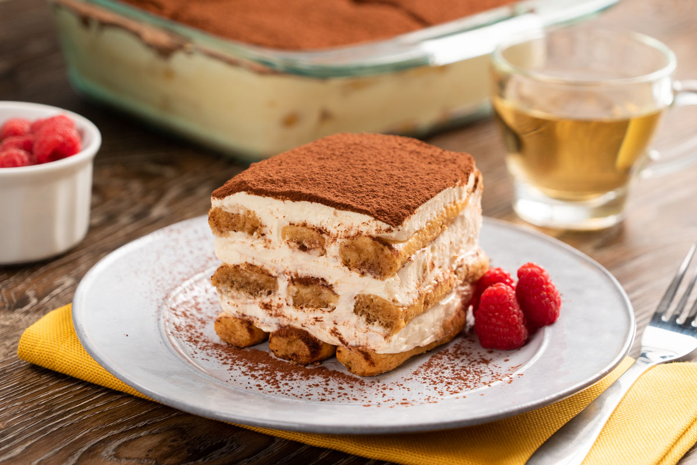

Recetas de cocina
Tiramisú Clásico üáÆüáπ

Ingredientes:
- 500 g de queso mascarpone
- 4 huevos
- 100 g de azúcar
- 200 g de bizcochos de soletilla
- 1 taza de café fuerte
- 50 ml de licor Amaretto
- Cacao en polvo
Preparación:
1. Preparar la crema:
Separa las yemas de las claras. Bate las yemas con el azúcar hasta obtener una mezcla espumosa.
Añade el queso mascarpone y mezcla suavemente.
2. Montar las claras:
Bate las claras a punto de nieve e incorpóralas con movimientos envolventes a la crema de
mascarpone.
3. Montar el tiramisú:
Mezcla el café con el Amaretto. Moja los bizcochos en la mezcla y colócalos en la base de un
molde. Cubre con una capa de crema de mascarpone. Repite hasta terminar con una capa de crema.
4. Refrigerar:
Deja el tiramisú en la nevera durante al menos 4 horas. Antes de servir, espolvorea con cacao en polvo.